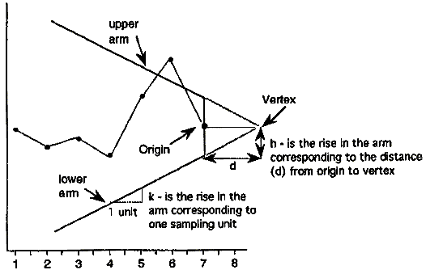
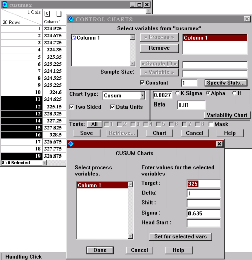
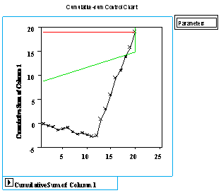
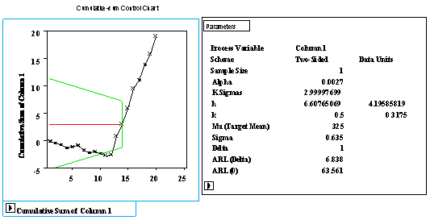

6.3. Univariate and Multivariate Control Charts
6.3.1. What are Variables Control Charts?
6.3.1.3. |
Cusum Control Charts |
CUSUM works as follows: Let us collect k samples, each of size n, and compute the mean of each sample. Then the cumulative sum (CUSUM) control chart is formed by plotting one of the following quantities:

A visual procedure proposed by Barnard in 1959, known as the V Mask, is often used to determine whether a process is out of control.
A V Mask is an overlay shape in the form of a V on its side that is superimposed on the graph of the cumulative sums. The origin point of the V Mask (see diagram below) is placed on top of the latest cumulative sum point and past points are examined to see if any fall above or below the sides of the V. As long as all the previous points lie between the sides of the V, the process is in control. Otherwise (even if one point lies outside) the process is out of control.

In the diagram above, the V Mask shows an out of control situation because of the point that lies above the upper arm. By sliding the V Mask backwards so that the origin point covers other cumulative sum data points, we can determine the first point that signaled an out of control situation. This is useful for diagnosing what might have caused the process to go out of control
From the diagram it is clear that the behavior of the V Mask is determined by the distance k (which is the slope of the lower arm) and the rise distance h. These are the design parameters of the V Mask. Note that we could also specify d and the vertex angle (or, as is more common in the literature, q = 1/2 the vertex angle) as the design parameters, and we would end up with the same V Mask.
In practice, designing and manually constructing a V Mask is a complicated procedure. A cusum spreadsheet style procedure shown below is more practical, unless you have statistical software that automates the V Mask methodology. Before describing the spreadsheet approach, we will look briefly at an example of a software V mask implementation given by the SAS software statistical package JMP.
An example will be used to illustrate how to construct and apply a V Mask procedure using JMP. The 20 data points
324.925, 324.675, 324.725, 324.350, 325.350, 325.225, 324.125, 324.525, 325.225, 324.600, 324.625, 325.150, 328.325, 327.250, 327.825, 328.500, 326.675, 327.775, 326.875, 328.350
are each the average of samples of size 4 taken from a process that has a target mean of 325. Based on process data, the process standard deviation is 1.27 and therefore the sample means used in the cusum procedure have a standard deviation of 1.27/41/2 = 0.635.
After inputting the 20 sample means and selecting "control charts" from the pull down "Graph" menu, JMP displays a "Control Charts" screen and a "CUSUM Charts" screen. Since each sample mean is a separate ""data point", we choose a constant sample size of 1. We also choose the option for a two sided Cusum plot shown in terms of the original data.
JMP allows us a choice of either designing via the h and k method or an alpha and beta design approach. For the latter approach we must specify
- a, the probability of a false alarm, i.e., concluding that a shift in the process has occurred, while in fact it did not
- b, the probability of not detecting that a shift in the process mean has, in fact, occurred
- d (delta), the amount of shift in the process mean that we wish to detect, expressed as a multiple of the standard deviation of the data points (which are the sample means).
Example of CUSUM chart

When we click on chart we see the V Mask placed over the last data point. The mask clearly indicates an out of control situation.

We next "grab" the V-Mask and move it back to the first point that indicated the process was out of control. This is point number 14. That is shown below, along with all the available information JMP provides about the Cusum design.

Note that h and k (in sigma units) for this cusum design are given in the parameter table above as h = 6.6077 and k = .5. A general rule of thumb ( Montgomery, 1995) when designing with the h and k approach, is to choose k to be half the delta shift (.5 in our example) and h to be around 4 or 5 (it turned out to be 6.6077 in our example).
Example of spreadsheet calculations
Many users of control charts prefer tabular charts over the V mask .The V mask is actually a carry over of the pre computer era. The tabular method can be quickly implemented by standard spreadsheet software
To generate the tabular form we use the h and k parameters expressed in the original data units (not in sigma units).
The following quantities are calculated:

TARGET (mo)
h
k
325
4.1959 0.3175
Increase Decrease
in mean
in mean
Group x
x-325 x-325-k S hi
325-k-x S low Cusum
-------------------------------------------------------------
1
324.93 -0.07 -0.39
0.00 -0.24 0.00 -0.07
2
324.68 -0.32 -0.64
0.00 0.01 0.01 -0.40
3
324.73 -0.27 -0.59
0.00 -0.04 0.00 -0.67
4
324.35 -0.65 -0.97
0.00 0.33 0.33 -1.32
5
325.35 0.35 0.03
0.03 -0.67 0.00 -0.97
6
325.23 0.23 -0.09
0.00 -0.54 0.00 -0.75
7
324.13 -0.88 -1.19
0.00 0.56 0.56
-1.62
8
324.53 -0.48 -0.79
0.00 0.16 0.72
-2.10
9
325.23 0.23 -0.09
0.00 0.54 0.17
-1.87
10 324.60
-0.40 -0.72 0.00
0.08 0.25 -2.27
11 324.63
-0.38 -0.69 0.00
0.06 0.31 -2.65
12 325.15
0.15 -0.17 0.00
0.47 0.00 -2.50
13 328.33
3.32 3.01 3.01
-3.64 0.00 0.83
14 327.25
2.25 1.93 4.94*
-.57 0.00 3.08
15 327.83
2.82 2.51 7.45*
-3.14 0.00 5.90
16 328.50
3.50 3.18 10.63*
-3.82 0.00 9.40
17 326.68
1.68 1.36 11.99*
-1.99 0.00 11.08
18 327.78
2.77 2.46 14.44*
-3.09 0.00 13.85
19 326.88
1.88 1.56 16.00*
-2.19 0.00 15.73
20 328.35
3.35 3.03 19.04*
-3.67 0.00 19.08
* = out of control